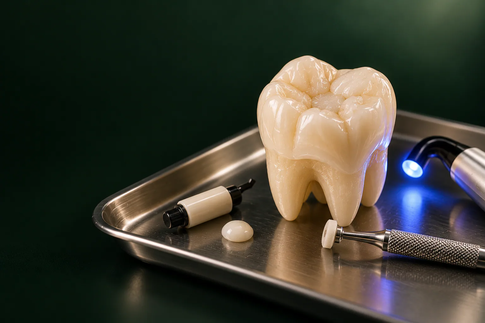

Осмотр
Терапевт выслушивает жалобы, осматривает все зубы и проверяет старые пломбы. Консультация бесплатная.

Лечение кариеса в стоматологии «Умная Медицина» в пос. Удельная (Раменский округ): это удаление разрушенных тканей зуба и установка пломбы, которая возвращает ему форму, цвет и способность нормально жевать.
Имеются противопоказания. Необходима консультация специалиста.
Принимают стоматологи-терапевты Читайкин Артём Сергеевич и Каштанова Екатерина Константиновна, молочные зубы лечит детский стоматолог Троицкий Даниил Леонидович. Стоимость: от 4 000 ₽ за зуб. Начните с бесплатной консультации терапевта: врач найдёт все очаги кариеса, включая спрятанные между зубами, и назовёт цену до начала работы.
Цена зависит от того, насколько глубоко зашёл кариес и сколько поверхностей зуба он затронул. Маленькая полость на жевательной поверхности обходится дешевле, чем большая, захватившая стенку между зубами. На итог влияют и дополнительные шаги: снимок, лечебная прокладка при глубоком поражении, восстановление формы переднего зуба. Терапевт называет сумму после осмотра и до начала лечения, чтобы вы заранее знали, за что платите.
Цена «от»: минимальная, окончательную стоимость врач назовёт после осмотра и снимка. Цены актуальны на 18.10.2026. Остальные услуги клиники: на странице цены.
уточняем у клиники
Кариес развивается постепенно, и чем раньше его заметить, тем меньше тканей зуба придётся убрать. Поэтому врачи советуют не ждать боли: на ранних стадиях зуб почти не беспокоит.
На эмали появляется матовое белое или коричневатое пятно, полости ещё нет. Зуб может слегка реагировать на кислое и сладкое. На этой стадии иногда обходятся без бормашины: эмаль укрепляют реминерализующими средствами и налаживают гигиену. уточняем у клиники
Разрушение не выходит за пределы эмали, на зубе видна шероховатость или небольшой дефект. Обработка занимает немного времени, а пломба получается маленькой.
Кариес проходит эмаль и попадает в дентин: более мягкий слой под ней. В полости начинает застревать еда, зуб коротко реагирует на холодное или сладкое, и ощущение проходит, как только раздражитель убран. Врач очищает полость до здоровых тканей и пломбирует её.
Поражённый слой подходит близко к нерву зуба (пульпе). При таком лечении особое внимание уделяют защите нерва: на дно полости кладут лечебную прокладку с кальцием, которая помогает восстановлению тканей, а поверх неё, изолирующую. Она защищает пульпу от перепадов температуры и от компонентов пломбировочного материала. Если врач сомневается в состоянии нерва, он может сначала поставить временную пломбу и оценить реакцию зуба уточняем у клиники.
Если кариес уже дошёл до пульпы и она воспалилась, это пульпит: появляется сильная, часто ночная боль, реакция на холодное долго не уходит. Здесь одной пломбой не обойтись: нужна работа с каналами, подробнее на странице лечение пульпита.
Иногда кариес появляется у края десны, на шейке зуба, или на корне, если десна опустилась. Такие участки труднее чистить, а ткань корня мягче эмали, поэтому кариес здесь идёт быстрее. Материал для пломбы у десны врач подбирает с учётом того, насколько сухим удаётся держать рабочее поле и как часто эта зона попадает под щётку.
Терапевт выслушивает жалобы, осматривает все зубы и проверяет старые пломбы. Консультация бесплатная.
Прицельный снимок за 500 ₽ показывает, насколько глубоко ушёл кариес и нет ли изменений у корня. Скрытый кариес между зубами часто виден только на снимке.
Если кариес средний или глубокий, делают местную анестезию.
Врач удаляет размягчённые и инфицированные ткани, сохраняя как можно больше здоровых.
Полость промывают антисептиком, чтобы под пломбой не осталось бактерий.
При глубоком поражении кладут лечебную и изолирующую прокладки.
Светоотверждаемый композит вносят слоями и каждый слой отверждают специальной лампой: так материал меньше сжимается и плотнее прилегает к стенкам.
Врач проверяет прикус, убирает лишнее и полирует пломбу до гладкости, чтобы на ней не задерживался налёт.
Сроки и цену каждого этапа врач распишет в плане лечения.
Записаться на консультациюОбычно один зуб с кариесом лечат за одно посещение уточняем у клиники. Если нужно вылечить несколько зубов, терапевт составит план и предложит, какие из них делать за один визит.
Анестезия местная: препарат вводят рядом с зубом, и на время приёма участок теряет чувствительность. При поверхностном кариесе она часто не требуется, но если вам так спокойнее: скажите врачу. Перед уколом терапевт уточнит, нет ли аллергии, хронических болезней и беременности: от этого зависит выбор препарата. уточняем у клиники Общий наркоз и седацию клиника не проводит.
В работе используют два основных вида материалов. Какой выбрать, решают вместе с врачом по расположению зуба, глубине полости и вашим пожеланиям к внешнему виду. уточняем у клиники
Это композит, который твердеет под светом специальной лампы, в обиходе её называют световой пломбой. Врач подбирает оттенок под соседние зубы, поэтому такая пломба почти не выделяется. Композит хорошо полируется и подходит как для жевательных зубов, так и для передних. Если на переднем зубе нужно восстановить большой скол или изменить форму, речь уже идёт о художественной реставрации: она стоит от 8 550 ₽.
Материал прочно сцепляется с тканями зуба и выделяет фтор. Его применяют у детей, в зоне у десны, в качестве прокладки под композит, а также там, где эстетика не на первом месте. По цвету он менее естественный, чем композит.
Временная пломба на зуб нужна, когда лечение проходит в несколько этапов: она закрывает полость до следующего визита. Она мягче постоянной и со временем стирается, поэтому откладывать повторный приём не стоит.
Срок службы зависит от размера пломбы и нагрузки на зуб, от гигиены, привычки сжимать или скрипеть зубами, любви к твёрдой пище. Небольшая пломба на жевательной поверхности служит дольше, чем обширная, которая заменяет стенку зуба. Чтобы вовремя заметить скол или потемневший край, приходите на осмотр раз в полгода. уточняем у клиники
Пломба надёжна, пока у зуба остаются прочные стенки. Если кариес разрушил зуб больше чем наполовину, большая пломба может не выдержать жевания и привести к трещине. В этом случае терапевт приглашает ортопеда, и вместе они предлагают другой способ восстановления:
Ортопедическое лечение в клинике проводят Солодухин Евгений Викторович и Алиханова Светлана Андреевна. Все варианты описаны в разделе протезирование.
Эмаль молочных зубов тоньше, чем у постоянных, поэтому кариес у детей развивается быстро и легко переходит в пульпит. Молочные зубы лечит детский стоматолог Троицкий Даниил Леонидович. Первичная консультация с планом лечения стоит 2 500 ₽, повторная: 2 000 ₽, вылечить кариес молочного зуба стоит 7 000 ₽. Для пломб используют светоотверждаемые материалы и стеклоиономерный цемент.
Защитить зубы ребёнка помогают профилактические процедуры: покрытие зуба фтор-лаком (от 450 ₽), реминерализующая терапия Tooth Mousse (2 000 ₽ за обе челюсти), герметизация фиссур, запечатывание бороздок на жевательных зубах (от 1 600 ₽ за зуб). Подробнее: в разделе детская стоматология. уточняем у клиники
Кариес и пломбы в клинике: работа стоматологов-терапевтов. Многие пациенты приезжают из Люберец и Раменского, поэтому, если зубов несколько, визиты можно заранее спланировать на удобные дни.
Обо всех направлениях терапии: на странице лечение зубов, обо всех специалистах, на странице врачи.

Терапевт, эндодонтист
Лечение кариеса и каналов, сохранение зубов
Записаться к врачу
Терапевт, ортодонт
Эстетическая реставрация и прикус
Записаться к врачу
Детский стоматолог
Дети, профилактика и лечение детских зубов
Записаться к врачуРейтинг клиники на Яндекс Картах: 5,0 (на 18.10.2026). Здесь публикуем отзывы пациентов, которые лечили кариес у терапевтов клиники, и только с их письменного согласия.
отзыв пациента
Несколько дней зуб может ныть или реагировать на холодное и при накусывании: ткани привыкают к пломбе. Если ощущения ослабевают, это допустимо. Если боль нарастает, стала самостоятельной или появляется ночью, покажитесь врачу: возможно, воспалился нерв или пломба завышена.
Лёгкий дискомфорт под временной пломбой бывает. Сильная, пульсирующая боль, отёк или боль при накусывании: повод позвонить в клинику и прийти раньше назначенного срока. Не снимайте пломбу самостоятельно.
Видимой полости может не быть, а кариес прячется между зубами или под старой пломбой. Боль дают и трещина эмали, оголённая шейка зуба, воспаление десны, проблемы у корня, иногда: соседний зуб. Причину покажут осмотр и снимок.
Короткая реакция на холодное в первые дни встречается часто и обычно проходит сама. Если чувствительность держится долго, усиливается или боль не уходит после того, как холод убран, запишитесь на осмотр.
Под местной анестезией врач удаляет поражённые ткани, обрабатывает полость антисептиком, при необходимости кладёт прокладки, затем слоями вносит композит и отверждает его лампой. В конце пломбу подгоняют по прикусу и полируют.
Для большинства жевательных и передних зубов подходит светоотверждаемый композит: он прочный и подбирается по цвету. Стеклоиономерный цемент чаще ставят детям, у десны или под композит. Окончательный выбор врач делает после осмотра, с учётом глубины полости и расположения зуба.
Композитная пломба подбирается по оттенку и после полировки почти не отличается от эмали. Стеклоиономерная немного светлее и матовее. Старые металлические и потемневшие пломбы можно заменить на композит.
Лечение с пломбой стоит от 4 000 ₽ за зуб, композитная реставрация: от 8 550 ₽, лечение молочного зуба, 7 000 ₽. Консультация терапевта бесплатная, прицельный снимок, 0 ₽.
Только на стадии пятна, пока в эмали нет полости: тогда её укрепляют реминерализующими средствами. Если полость уже появилась, без механической обработки кариес не остановить уточняем у клиники.
уточняем у клиники
Запишитесь на консультацию: план лечения с ценой по этапам
Имеются противопоказания. Необходима консультация специалиста.
Адрес клиники: Московская обл., Раменский округ, пос. Удельная, ул. Громова, 10/2. Клиника в 5 минутах от Жуковского; рядом Малаховка, Быково, Ильинский, Родники, Островцы, Красково и Октябрьский. Пациенты приезжают и из Люберец, Раменского и Балашихи.
На машине: 5 минут от Жуковского через Быково. Парковка: уточняем у клиники.
На МЦД-3: до станции Удельная, от неё около 10 минут пешком. Из Жуковского: от станции Отдых три остановки (Ильинская, Быково, Удельная), весь путь около 20 минут.
Стоматология работает ежедневно с 9:00 до 21:00, визит к терапевту удобно совместить с дорогой домой после работы.
Подробнее о клинике: на странице стоматология в Удельной.
Имеются противопоказания. Необходима консультация специалиста.
пгт Удельная, Раменский округ. 5 минут от Жуковского.
Ежедневно с 9:00 до 21:00
+7 495 150-36-15К нам ездят из Жуковского, Раменского, Быкова, Ильинского, Красково, Малаховки, Островцов, Люберец и Балашихи.
Перезвоним за 5 минут, подберём врача и удобное время.
Оставьте номер, администратор перезвонит и ответит на вопросы.
Подойдёт КТ, панорама, прицельный снимок или фото плана лечения из другой клиники. Врач посмотрит и ответит в течение рабочего дня. Это бесплатно.
Хирург, ортопед и терапевт осмотрят вас вместе, сделаем КТ. Консультация бесплатная, стоимость лечения врач назовёт после осмотра.
Консультацию ведут вместе
 ХирургМихаил
ХирургМихаил ОртопедЕвгенийТерапевтАртём
ОртопедЕвгенийТерапевтАртёмПервый визит бесплатно
Хирург, ортопед и терапевт посмотрят ваш случай вместе и предложат два-три варианта с ценой. Оставьте номер, администратор перезвонит и подберёт время.
Скидка 10% на лечение, если оплатить его в день консультации
Перезвоним за 5 минут, ежедневно с 9:00 до 21:00. Отправляя заявку, вы соглашаетесь на обработку персональных данных.